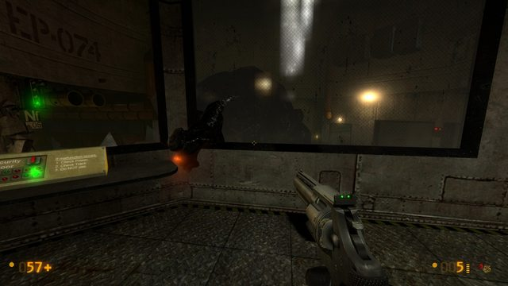
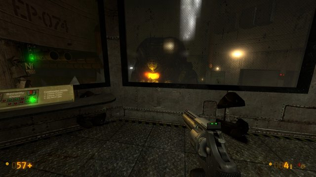
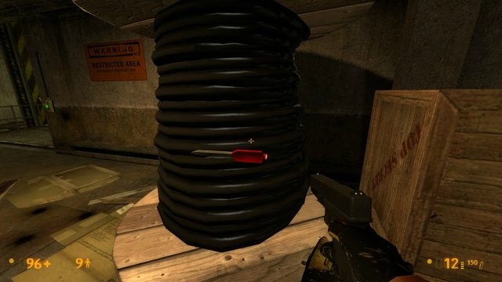
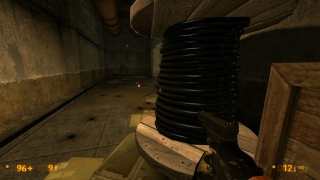
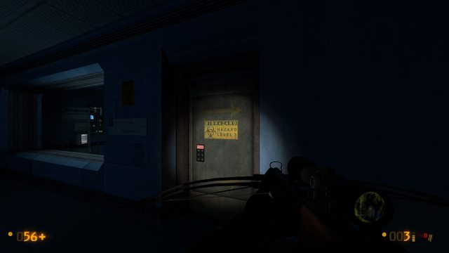
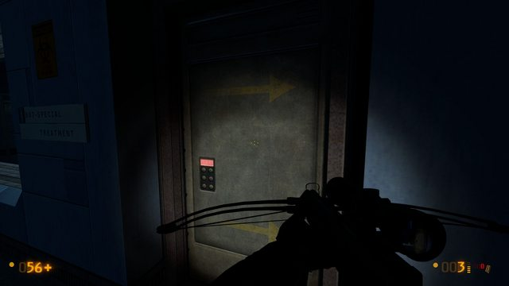
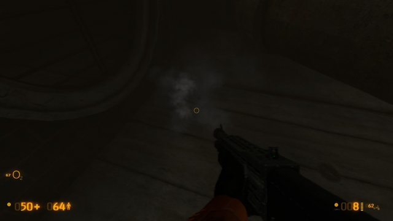
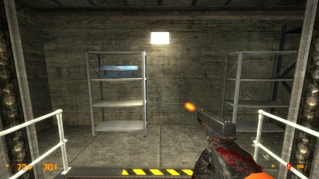

I’ve been keeping a running list together as I play through this gem of a game. These are mostly minor issues that I’ve stumbled upon during general play.
Possible spoilers within.
The condensed status report before beginning this list:
] status
hostname: Half-Life 2
version : 1.0.1.0/14 4104 insecure
My system specs are:
Processor: AMD FX™-4100 Quad-Core Processor (4 CPUs), ~4.2GHz
Memory: 6144MB RAM
Card name: NVIDIA GeForce GTX 550 Ti
Display Memory: 3766 MB
Dedicated Memory: 977 MB
Shared Memory: 2788 MB
Current Mode: 1920 x 1080 (32 bit) (59Hz)
All display settings in the game are set to the highest.
-
The elevator in bm_c1a1e (-1825 x, -8070 y, -3583 z) closes too slowly/doesn’t prevent players from exiting. It results in being shut out.
-
.357 doesn’t automatically reload while aiming.
-
The ladder and vent cover in bm_c1a3a (-1596 x, -659 y, -255 z) are passable by the player. Were the VPhysics set to Not Solid?
-
The shaft in bm_c1a3c (-2575 x, 1248 y, -1725 z) seem to produce two roped soldiers in two scenarios: The first, both zip down in front of the opening in front of you, and the other, one zips down in the corner of the shaft while the other remains hidden somewhere at the top, as if he never grappled down.
-
Before the train crashes to a dead stop in bm_c1a4a (6 x, -4825 y, -735 z), the player can prevent being launched into the radioactive spill by moving backwards during the crash sequence. Though this may have just been a rare physics glitch.
-
Similar to 1, in bm_c1a4b (-683 x, -2 y, 1408 z), the silo doors have enough of a delay so players can run out the other side before it closes, shutting them out. What’s the point of reporting this? Why would a player do that? Because they could.
-
When the player first meets the ‘Garg’ in bm_c2a1a, it’s model sometimes clips through the wall while in the windowed control room.
 -
As the player rides the train throughout bm_c2a2a, any change in elevation unequips the player of the train controls. I don’t think this was an intentional effect.
-
I know this was already reported, but at the train lift in bm_c2a2a (-1946 x, 2689 y, 817 z), the lift stopped halfway up then began a descent. This may have been caused by attempting to ‘Use’ the train while it was being lifted.
10.Some time after getting the crossbow, the player moves down a corridor that spawn a few vorts in bm_c2a3c. There is a large spool prop in the hallway at (-611 x, -1148 y, -151 z). The space inside the spool is solid. The player cannot shoot past it, resulting in wasted ammo.

-
The guard that follows you in bm_c2a4f doesn’t seem to be able to open doors, so if one shuts between you two, he is stuck until you open it. This may occur with scientists too, or it may not. I only noticed it enough to test it here.
-
A door in bm_c2a4f at (830 x, 1916 y, -335 z) has signage that disappears when looking at it at an angle.
 -
The auto-aim doesn’t seem to be working for me on any difficulty.
-
The destroyed building in bm_c2a5f at (213 x, -2102 y, 290 z) has two fires that can be traversed over while suffering no fire damage to the player. Just pointing this out.
-
It may just be me, but the rocket launcher doesn’t seem to have an effective/realistic damage radius. I’ve had several occasions where I shot a rocket at the ground in front of a handful of enemies and only one or two are blasted away.
-
I was having trouble getting on and off the ladder in bm_c3a1a at (1184 x, -2167 y, -1167 z). Seems the only way to get off is to hit the Jump key and move forward. And again on the ladder at (1760 x, -2182 y, -945 z).
-
The turret near the coordinates above in bm_c3a1a, when blasted into the water with a grenade, disappears when attempting to interact with it. You can still pick it up and throw it, but the model disappears. Only it’s smoke remains.
 -
I just noticed that you can cancel the Gauss Gun’s charge by selecting a weapon during its charge. After switching to another weapon though, a small beam of light exits the barrel of whatever weapon you switch to.
 -
Before the level transition from bm_c3a2d to bm_c3a2c at (337 x, 328 y, -255 z), there is a body of a scientist missing on the rubble.
I will continue working on this list as I play. Expect more updates within this post.